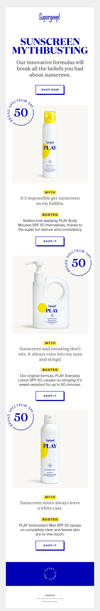
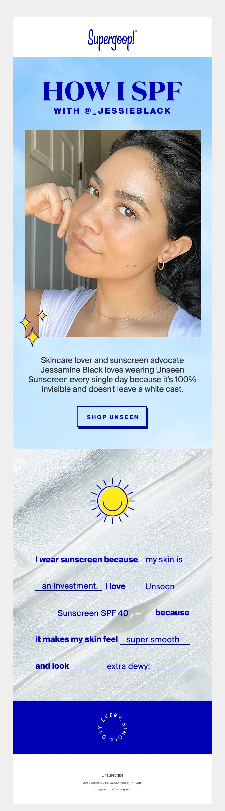
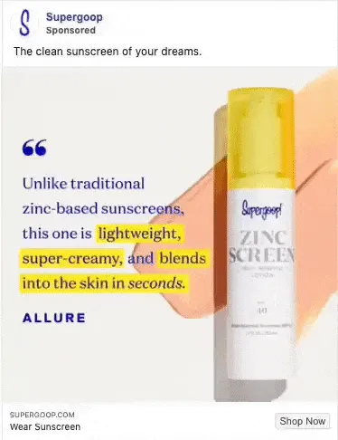
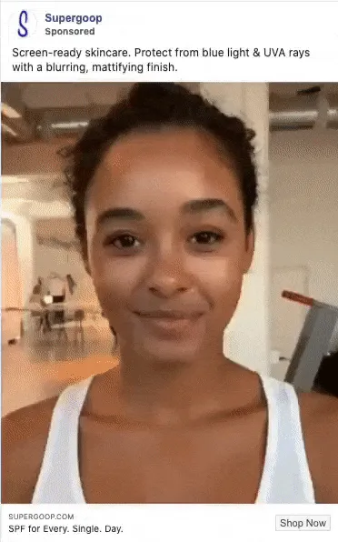

This FF episode was sponsored by emfluence. Get paired with a marketer to see how your strategy will work in the emfluence Marketing Platform.
📋 TL;DR key takeaways from this episode:
1. Get to know your customers to understand their objections, and squash those objections. Tell customers what to buy with your email because they like to be led and informed.
2. Limit your palette of typography and color so it doesn't get in the way of the content. What do you want customers to walk away feeling? Take that content and turn it into an experience for customers.
3. Embracing UGC (user-generated content) can be uncommon in a good way. Showcase a nice picture that feels authentic and represents the brand. Advertise a well-lit video that feels natural, such as filming on a phone. Make the content look native to the platform you’re publishing it on and make it look authentic to your customers.
BONUS: Keep press efforts in your campaigns. Use enticing headlines, strong sentences, and call out customer quotes in the creative.
Matthew Smith: Happy Friday, email geeks. I am here with Meredith Schoenberger and Ben Philabaum from Biddyco.com. I love these folks. I've gotten to know them over the last, I guess maybe it's been like two months, three months, something like that. You know, it's like a COVID romance we've got gone on or something like that. Cause it's about the same amount of time.
I found you yall through an ad. So I know that the work you do as digital advertising is working and I've just really enjoyed getting to know you all and what you're doing. And so when I asked if we could talk about the relationship between email and advertising, we all jumped on it. So welcome to feedback Friday, where we're going to talk about email and advertising today. I'm grateful to have you here.
Ben Philabaum: Thank you for having us. It's an honor to be here. Been followers and admirers of Really Good Emails for years, years for sure. So very cool to be here with you.
Matthew Smith: Did we agree on the amount that I was going to pay you to say that I can't remember if we talked about that.
Ben Philabaum: It was a lot.
Matthew Smith: Oh yeah. Okay. Well, let's add a comma. That's awesome. Well, I appreciate it. Well, yeah, it's super fun to have you all here. And I would love to dive right in and we'll use this email and advertising set up between these two emails and two ads as a way of getting also to know Biddyco a little bit. So why don't we start here with this Supergoop! sunscreen myth-busting email.
Tell me a little bit about what you think is working effectively and then intermittently, just let me know when you want to jump over to the ad and we'll walk through that as well.

Meredith Schoenberger: Yeah. So Supergoop! It is one of my favorite brands. Just a quick backstory, they are a very innovative DTC brand that has kind of melded sunscreen and skincare. And so one of the big things that we always talk with our work is how do we get people to push over the edge? How do we get someone to click, to buy, whatever? And usually, we will turn to pain points or objections that our future potential customers have.
And how can we squash those super quick? And so we thought that this email was just such a great living, breathing example of how to squash objections super quick. So you see, you know, they. Take three of kind of the most popular ones. And then not only do they tell you why it's not true, but they then suggest a product.
So it's showcasing their product catalog. It helps tell customers what to buy. We always say that like, don't assume that your customer knows what to do or knows what to pick. They like to be led. So I thought it was a really beautiful way of kind of making it really content-based, informative, but also very suggestive.
Ben Philabaum: I think as far as just the objection busting, and that's kind of our main focus, especially on the ad side, it's more so like retargeting, you know, someone's been to your site, you know, 97% of them aren't going to buy. Why not? Most likely they had some hesitation. They had some concern, some question on their mind that wasn't answered.
So yeah, this whole email, I think just as a great job of not just hitting just one objection, but multiple.
Matthew Smith: Yeah, it's such an interesting framework. I love this way that they go from, you know, myth busted, shop it. Myth busted, shop it. Myth busted shop it. You know, like what a cool style of dealing with that challenge.
It's even, product, myth busted, shop it. Product, myth busted, shop it, and you know, some nice overlays, some things that are working well. One of the things from a design perspective that I think is, is so effective is in this myth-busting work that they're doing, or a, I think objection, busting, which I appreciate the way you said that is they're using a very limited palette of typography and color, so that doesn't get in the way of the content.
So often people have emails that are too busy. I've never seen an email that's too simple. I just haven't, you know, it's doesn't exist. I mean, maybe somebody said, you know, hello, and that was it. And like, that's the end? Hello world. too simple. No CTA. I hope it works.
Yeah, I haven't seen it. Maybe Really Good Emails should try one, but in the meantime, you know, being able to use this yellow and call out these headings, just a fantastic, fantastic job of really highlighting, literally highlighting. Myth busted, you know, and, and this highlighter style of heading. The only thing that is a little weird to me, and I guarantee you that 99% of people don't see it and don't even pay attention is it's a little weird to me that you have a typography here that is this really elegant stuff that fits well with the brand and then under busted, it's different. type style, but the same size.
So generally speaking as a design best practice do not do this. Do not take very, very similar visual aesthetics here with only one difference of, you know, like it's serif and sans-serif. Instead, what they could have done would be to have a smaller typeface here and then utilize that with maybe gray.
Maybe make the text just a little lighter, like create a little more different. So it's a little bit like, question, answer, or keep it the same. You know, just let it be the same and it would have worked probably just fine. So I think that's the only thing that I can think of that isn't working. Ok, two other things.
Okay. I have to live up to my picky asshole behavior here. So one of the things that I would love to see in these emails, and we can jump over to the next one here in a minute. But is one is especially in a simple email like this, it would be great to see some interactivity on a button. Yeah. And that's doable these days and it's easy to degrade down for older email clients like Outlook.
And it's so much more effective to help people feel like they know what to click now that said the buttons are very obvious. And I like it, you know, they connect. Right. But. The other issue that ties in with this is these two emails that we're going to look at. If they had sent this off to, Mail Bakery or to Uplers, or some of the high-quality developers out there, they could have had this developed in a way that then they can multivariate test with different type.
They can have it flex for mobile a lot more smoothly, you know, and look at some different opportunities here. So the text is okay and it works, you know, like at least on the mobile I can view it it's big enough, but live text is the future. And I haven't looked at the alt-text on this. But generally speaking, people don't take the time to really deliver high-quality alt text on, you know, an element like this.
And I think that's problematic. So I always talk about live text being something we'd like to see more of, but everything else in this email is working effectively. One thing I think. Would be interesting. And you all probably know a little bit more about Supergoop! Maybe then I do.
Cause have you found these, but I think they've probably got more than three products. Is that right?
Meredith Schoenberger: Yes. Oh yeah.
Matthew Smith: So right. So I would expect why not go ahead and show, shop all products or something to get us into something a little more. Now that said they may have done some testing and found out that it was more effective to just focus on three, but I would love to know data around that.
So let's jump over to the next email and, and talk through it. Cause it's a little different. What do you all think is working here and what draws your eyes out? And then we'll jump over to the advertising that connects to both of these.

Meredith Schoenberger: Perfect. I think that one thing that stood out for me within this email is that they're embracing the idea of UGC. So user-generated content, and this is something within ads that we really, really encourage brands to seek out to secure, and then to utilize it. We're constantly using UGC within ads and we seel like a huge, huge response in terms of clicks and purchases through that type of creative.
To see it utilized in an email, felt a little uncommon in a really good way. There was something, you know, obviously the UGC just from looking at the photo, we always say like, you know, you don't want to be using user-generated content.
That's low lighting and looks generally just not attractive and good. You want a pretty picture that feels authentic. That represents the brand. And she is glowing.
I thought it was really fun too, that they kind of tied in that cute icon, that little doodle that's kind of reminiscent of the emoji. You know, that kind of like a glimmer shimmer emoji.
Matthew Smith: Yeah. And you all, I've on your video recently, I noticed you talked about this and the addition of this to this email adds so much, even though it's a tiny detail, because otherwise it feels fairly like, you know, it's just a photo dropped into a kind of a, you know, a canvas image here or canvas kind of background, but this little detail adds this nice little doodad finesse that breaks the border and just makes it feel a little more customized and, and handmade, like you sense personality coming through in it. It is effective.
Meredith Schoenberger: Yeah. And kind of just to piggyback off that, it just feels super friendly, which is the tone and the feel of their brand.
And so constantly thinking about, you know, in ads, like what is the tone and the feel of your brand? What are you trying to communicate? And mostly like, what do you want future potential customers or current customers to walk away feeling? And that is perfect. Like you see that and you're like, Oh, that's really, that's cute.
Which for Supergoop! is their vibe. And then I think. Again, like Supergoop! does such a great job of taking content and turning it into an experience for customers.
Matthew Smith: Do you think that this is, I mean, you're probably about to say I'm, I'm fascinated by this. So do you think that this is content that they went out and did some surveys or maybe in their user journey? They've gathered some of this information and the sense is these are tied, although they might not be. And this might not even be a user-generated content, but it's sure. It feels like it is right. And it's so effective. They don't, they never say anywhere that it is. And I'm like, Oh yeah, cool.
That's and now, okay, I'm going to get geeky here for a minute. There's a great, great book called understanding comics, which is whenever anybody's like, Hey, what books do you recommend for design? Oh, understanding comics by Scott McCloud. And they look at me like are you cuckoo? I didn't say comics.
No, just listen to me. It's all about abstraction. It's all about understanding the visual language, right? So. It's sort of funny. This is a perfect example. This is a disc with lines around it and an arc within it and a color. That's all it is. But through symbolism, we understand it's a smiling sun.
That's freaking cool. Like that's how the brain works. Right? Well, this is also an abstraction in the same way that like we can watch Homer Simpson and relate to his stupidity because we go, Oh, I'm stupid. Like that sometimes in the same way we go, we like put ourselves into this little written setup.
Oh yeah. My skin is an investment too. Oh, huh. What's this unseen sunscreen. SPF 40. Ooh. I like smooth. I want to look dewy, whatever that means. And it sounds awesome. You know, so like it's just a fascinating abstraction. Like I'm able to get myself in there. Whereas sometimes when I look at fashion advertising, the advertising is so not me.
So other. Now that does. A different job, right. It creates FOMO and I'm not a fan of FOMO. And so I disagree with some of those ethics, but this doesn't feel like FOMO to me, this feels like empathy. This feels like a connection. So it's interesting. Does that, does that connect for you all? I feel like sometimes I'm cuckoo on some of this stuff.
Meredith Schoenberger: No! A hundred percent and I think what's cool is we're constantly talking about how do you put your product in context?
And this whole Madlib is almost this like a sneaky way to contextualize it for whoever is reading it without having to be super obvious. So usually, you know, within the text, if you're going to try and use text within context, you're going to have to ask a question. So it would be like, why do you wear sunscreen?
You know? And in the mind, you know, unconsciously answers it or what do you want your skin to feel? But what's cool. Is that like, we're all so familiar from childhood doing Madlibs. We know what that fill in the blank means.
Matthew Smith: I had forgotten Madlibs and I'm like, Oh yeah, that's what this is.
Meredith Schoenberger: Yeah, yeah. And it's really kind of fun. And I think what you were saying earlier too, you know, I do sometimes hate the idea that advertising and whatnot is a little bit of smoke and mirrors, but at the same time it works so beautifully. It could be Jessie, the woman who is featured, maybe she's filled this out.
It could be someone on the team. It could be from surveys, but it doesn't necessarily matter.
Matthew Smith: Here's one thing that I do think is interesting that I just thought of it based on what you just said is that I assume that it is Jessie. And if she were not up here, I would be like, what is this?
It wouldn't feel contextually connecting to me now, if there was a user quote, maybe, but there's a really good tie in from Jesse being up here to this, that they almost need each other they're symbiotic in some way. Does that, does that feel that way to you all as well?
Meredith Schoenberger: Yeah.
Ben Philabaum: Definitely.
Matthew Smith: It's interesting. Well, let's jump over and let's talk a little bit about these ads here. I'm going to close these windows and sort of focus, but tell me a little bit about how you see these performing. What what's working in this ad and how does it tie in for you?

Meredith Schoenberger: Perfect. I'll talk about the creative and then you can kind of talk about the backend. One thing that we know works consistently across the board, no matter what is press. And so we're constantly telling clients and just people within the industry, don't abandon your press efforts. Because a really great headline or sentence from any type of publication can just really make a difference in your campaigns and specifically you're calling it out in the creative.
What we love is that this is going and playing into that. Myth-busting objection, busters. So everybody who is a sunscreen fan or, or aware knows that zinc sunscreen is a total beast. It's almost impossible to rub in. You know, you look like a snowman. So the beauty of this is that like, this is a revolutionary product and it's like a double whammy. They have this incredible press quote that describes exactly why this is better than traditional zinc sunscreen.
Matthew Smith: So this is super interesting. I'm actually about to redesign my website and this is very affirming. I'm taking a different tack and I'm going to build the site off of testimonials and quotes, and that's going to be the entire center of the site and it's, it's just sort of a personal site. I haven't done a personal site in years and I'm wanting to build it off of what other people are saying about their experiences, working with Matthew Smith, rather than what I say, because it's so much more informative and you take it at a different level.
It's when you talk about yourself, it borders on narcissism. Especially when you're like, let me tell you about me. Oh, enough about me. What do you think about me? You know, like all that kind of stuff, but it's so powerful to hear what other people's experiences are that do the objection busting. I love that.
Ben Philabaum: No. And I think, yeah, kind of like coming up with those ahead of time and just trying to read your customer's mind. So for you and the design side, maybe it's, you know, A lot of times it's when people see that first quote, it's like, Oh my gosh, he's pretty expensive. But if the testimonial is a, First I thought they were really expensive. But after getting the work, Oh my gosh, it was so worth it. Then, you know, someone sees that on your site and it's immediately like reframes that whole thing in their mind.
Matthew Smith: That's so interesting. I'm getting so many ideas from this episode. Y'all I'm having a lot of fun. This is great. All right. Let's look at this one here. So this goes after that user-generated content again.

Meredith Schoenberger: Yeah, absolutely. And I can probably almost guarantee that this is maybe somebody on their team. So something that we are constantly encouraging. Anybody who wants, who wants to listen is that like UGC doesn't necessarily have to be a customer.
Again you don't want to start only pulling testimonials and quotes from the people that work for your product, but a beautiful video that's well lit. Is super, super valuable. And sometimes that can be really, really like pulling teeth to get from a customer or, you know, specifically an influencer that can get expensive.
So an easy way to kind of workaround that is to have somebody that is a friend or somebody who works on the team to kind of film something that feels very natural, filming it on an iPhone. We're constantly talking about the difference between studio footage and kind of that rock-cut, dirty iPhone shot and clients are always so shocked to know that like a kind of rough and dirty iPhone video can outperform, you know, the $30,000-$50,000 studio video shoot.
And so really kind of encouraging people to go for it. And as long as you're not. Mixing and matching styles. And what I mean is sometimes you can get into that habit that like, if it's going to look kind of native, which is what we call it native to the platform, it should kind of almost a hundred percent feel native.
So wanting, I think, you know, Looking at this ad and looking at what they decided to do with the captions. That's the perfect example they could have branded that they could have made it look a lot more like Supergoop!
Ben Philabaum: Like how they did the text treatment. Yeah.
Meredith Schoenberger: Yeah. But they chose to do it how you would kind of see it on Instagram, how an influencer would do captions. that like kind of look, you know, just generic. And then they kind of tie it in at the end with that ending logo, CTA screen, which is something we always encourage. Anybody who's doing an ad to do.
Matthew Smith: So interesting. I love it. I feel like I'm learning a bunch. One of the things that it projects is this quality of authenticity, right?
Like there's a, a suspicion that comes in from brands because we're so used to seeing brands. Now, what will be interesting is in another. Three or four years, there'll probably be some suspicion around user-generated content as well. it'll be fascinating to see how we continue to evolve.
I think that the authenticity that comes with something like this, and I think at an ethics level, you know, we want to be careful about what we do. Like there's nothing in this that feels inauthentic or feels unreal. Right? Like they, this is a real person really using this actual product presumably.
That feels great. She is a good looking person, but not like an absurdly looking person or something like that. And I think there's an interesting quality there also appreciate that she's a person of color. That's nice to see here.
Meredith Schoenberger: I think what could have made this a problem would have been if they had put a testimonial that wasn't hers to it.
So I think what makes it feel kind of walking the line and still okay. Is that. They are not putting somebody else's testimonial over her footage. So rather they're just kind of giving us a rundown of what the product does just quickly, rather than saying like, Oh my God, this was the best sunscreen I've ever put on my skin.
You know? And then they like leave off who said that. So I think, and again to it, like it kind of tricks you, cause there's no sound to this video. And you're thinking that maybe there should be some voiceover or whatnot. So again, it's just kind of this mind trick.
Matthew Smith: Do you all ever go and watch like the director overview of a cool movie you love?
Ben Philabaum: Oh, it's been a long time, but I know what you're talking about.
Matthew Smith: One of the things that I hate is like, I love the Cohen brothers and you'll watch, like, how did they make the Big Lebowski. And they're there in this incredible scene. And they're like, I don't know. Do you remember how this came together? It's this sort of weird it's I guess it just sort of happened. That was accidental.
And you're like, what? You didn't even intend that. And it's, I feel like we're kind of doing that. Like we're gonna, you know, someday hear from the creative director. Oh, that's cool that it worked that way. We'd kind of did that, but I just, I love these insights.
I think you all are drawing out some fantastic little tidbits. One of the things that we do on our Feedback Friday episodes is we. Write everything out in a transcript. So it'll be fun to have this written out, and people will be able to read it as well. And we can drop in other examples if you want, but this is great.
I feel like we've learned so much, but you know, I just, I think there's so much to be learned from the experience of all of these together. Just really impressed and what an interesting little case study that we can all learn a lot from. I think one of the next things that I'm excited about with our team on a Really Good Emails is, we use a tool called Nifty images and enjoy working with them. And some other players do something similar, but it's the ability to actually take an image like this and use content from the user in this experience. So you can use it's a Photoshop file and then it takes data from.
The user database, and then you can set specific, like let's put, my skin is an investment into this part of the image as a field, et cetera. And if you follow our emails for a while, you'll see that we do some of these things. Like recently we did one for the tiger King, that whole series. It was fucking awesome. And it was so great.
Meredith Schoenberger: What a ride!
Matthew Smith: Like, I haven't even watched them and I'm like, I know what's happening. And it was so cool. We came up with like different names for people, and we've done things where we've come up with names like rapper names or those kinds of things, but you could see how this idea would be an interesting way of using Madlibs to do something fun and interesting.
And just to push our, our listeners and our users to think a little differently. Like there's, this is a very achievable email. This is not hard, right? Like that's one of the things that I think is wicked cool about this is these are not absurd ideas, right? Like if you get to know your users, you can know their objections and then go after that.
Right. I think that's fascinating. I appreciate the insights you all have delivered. Is there anything else you want to end on? Any, a special note here that feels like an appropriate, last word on these emails or ads?
Ben Philabaum: No, I don't think so. I think this is fun to kind of blend the two worlds of the email and the ad side and kind of parallels between the two.
Matthew Smith: Cool. I love it. Well, you know, I'm gonna be a dad here and I'm gonna finish with a little dad joke. I love it. Really Good Emails, users. There's half of them that are going to snicker with me and then half that will probably vomit and unsubscribe, but why couldn't the bicycle stand up by itself? It was too tired.
Meredith Schoenberger: I think I'm your audience for these jokes. I would come to watch your standup.
Matthew Smith: My girlfriend hates when I tell these jokes, she's like, you make yourself look so stupid. It's like, right. But I love them. They're great too funny. Well, I appreciate you all. Thank you for your time here. Thank you for going through these awesome emails. I learned a lot today. I hope our users did too. Let's record another one soon.
Everybody have a wonderful weekend. It's going to be beautiful out there on a Meredith and Ben side. What are you all going to be doing this weekend?
Ben Philabaum: Oh, actually, we're going backpacking this weekend. Yeah.
Matthew Smith: Oh hell yeah you are. Where are you going?
Ben Philabaum: Going to get into the woods. Going up to Sierra national forest. Trails are open up there right now. So good social distancing activity we figured and getting nature hook.
Matthew Smith: Yeah. I love hearing that so much. I grew up backpacking and I'm an Eagle scout and got all my nerdy. Nerdy stuff done that way. So yeah, I love it. I grew up in Colorado, so a lot of hunting, fishing, backpacking, hiking, all that kind of stuff is awesome.
Well, cool, well, have an awesome weekend email geeks. Stay safe out there. Black lives matter. We support it and we're for it. We're learning like a lot of our other community and stay safe and healthy and COVID free. We love ya. Talk soon. Bye.